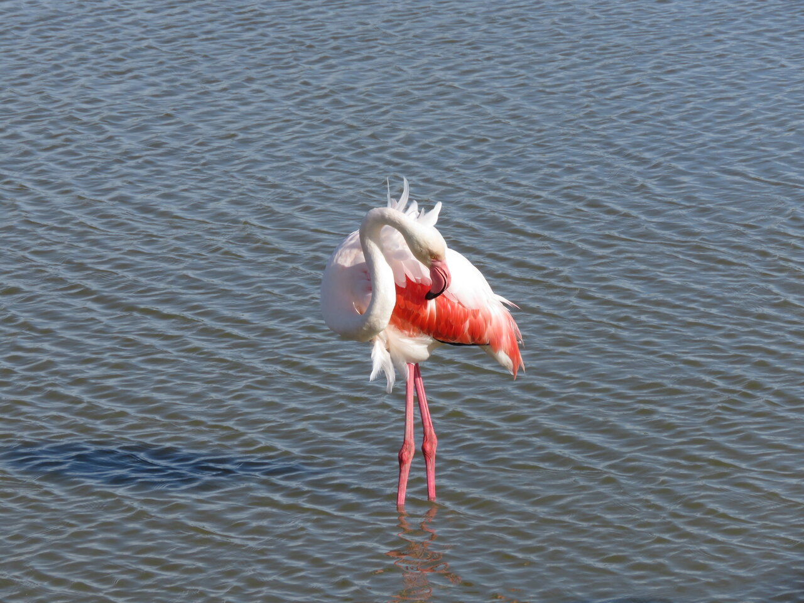

CARNET PHOTOGRAPHIQUE · FAUNE
Depuis mes dix ans, je prends en photo les animaux que je croise, à l'aide d'un appareil photo que mes parents m'ont offert, voici mes préférées.
Explorer les photographies
CARNET PHOTOGRAPHIQUE · FAUNE
